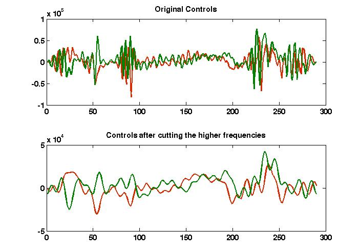

FileName : cutfreq
Contents
Description
Cuts the higher order frequency from a GRAPE pulse to make it more smooth. We take the fourier transform of the controls and neglect the higher frequencies as per input in per, then do the inverse fourier transform to get the new controls.
Command
new_u=cutfreq(GRinfo,per)
GRinfo : Variable in which all the information of grape pulse is stored.
per : percentage of high frequency components you want to truncate
Example
Shown below is an example.

function trunc_unew = cutfreq(GRinfo,per) global gra gra=GRinfo; if(per>50) ; error('Percentage is more than 50 % all entries will be zeros'); end unew = gra.u; funew = fftshift(fft(unew)); num2cut = round(length(funew)*per/100); for j=1:gra.m funew(1:num2cut,j) = 0; funew(length(funew)-num2cut:end,j)=0; end ifunew = ifft(ifftshift(funew)); trunc_unew = real(ifunew);